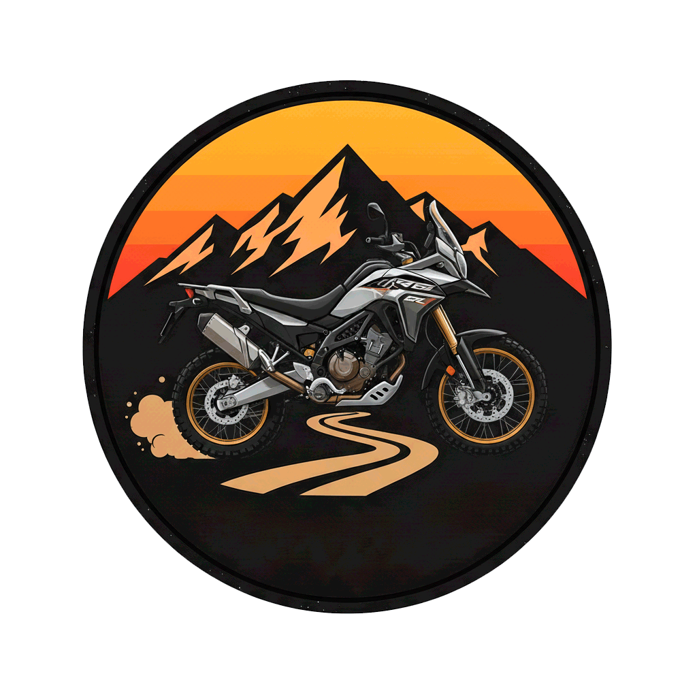

Moto & Estrada
DESCUBRA O
MUNDO SOBRE
DUAS RODAS
ÚLTIMA AVENTURA

DICAS PARA VIAGEM
Sempre verifique a calibraem dos pneus e lubrifique a corrente antes de pegar a estrada. Uma manutencão em dia, garante a segurança e evita imprevistos.
Todas as dicasGALERIA DE MOMENTOS


QUEM SOU EU
Carlos Phelipe, 30 anos. Nutricionista e, atualmente,
me aprofundo no mundo da tecnologia como estudante de
Sistemas da Informação.
Nos momentos de lazer, sou um
grande entusiasta do universo do motociclismo.